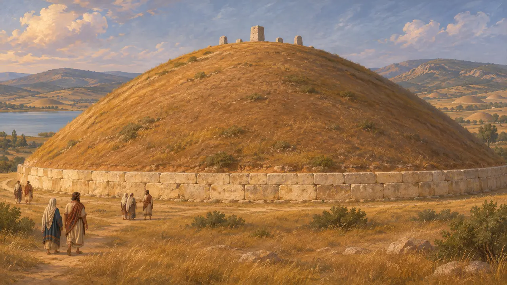
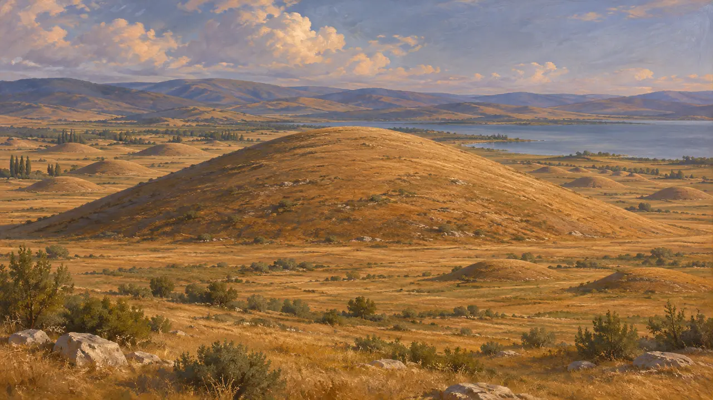
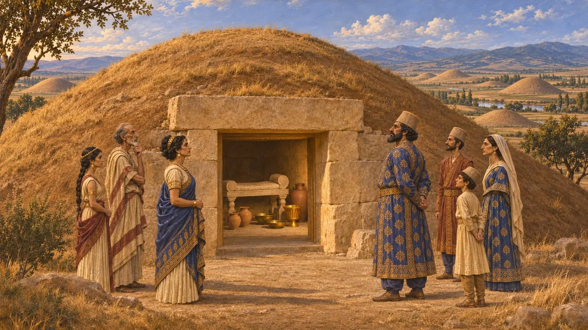
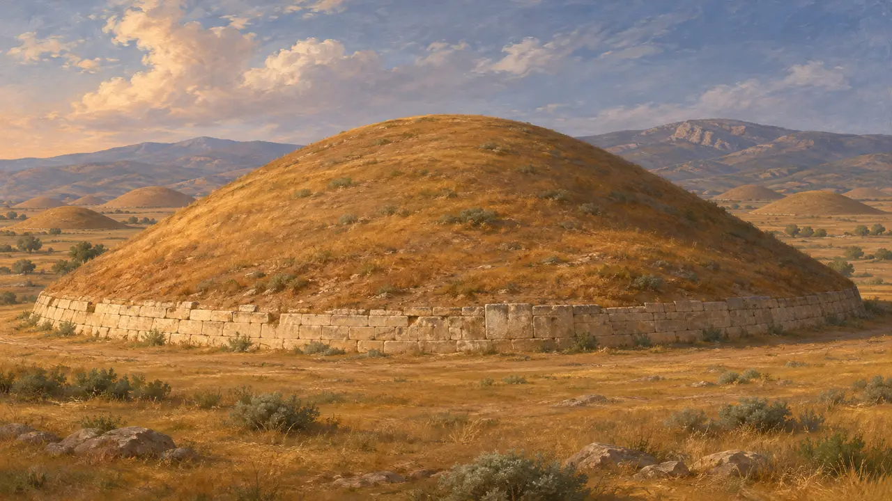

التل الجنائزي الملكي
تلال الدفن الليدية في بين تبه شمال سارديس، من القرن السابع إلى القرن الرابع ق.م
دُفن ملوك ليديا تحت تلال ترابية عظيمة أُقيمت على أساسات حجرية في بين تبه، وهي مقبرة تقع على بُعد نحو 10 كم شمال سارديس. وأكبرها، الذي يسميه هيرودوت ضريح ألياتس والد كرويسوس، يُعدّ من أكبر التلال في الأناضول. وقد واصل النبلاء الليديون والفرس إقامة مثل هذه التلال الجنائزية بعد أن استولى قورش على سارديس نحو عام 546 ق.م، فالتلال تشهد أيضًا على نخبة محلية استمرت في ظل الحكم الفارسي.
في اللعبة: في سارديس تصبح المقبرة تلًّا جنائزيًا ملكيًا تموّله المدينة، يحمل إليه الحمّالون الموتى. ينسب هيرودوت تمويله إلى التجار والحرفيين والبغايا، وكانت التلال الملكية الحقيقية قائمة بمعزل في بين تبه، لا بين قبور المدينة.

هيرودوت عن ضريح ألياتس
رواية قديمةعدّ هيرودوت ضريح ألياتيس العملَ العظيم الوحيد في ليديا الذي يضاهي أعمال مصر وبابل. ويذكر أن له قاعدة من حجارة ضخمة يعلوها تلّ من التراب، وأن تجّار السوق والحرفيين والبغايا في سارديس هم من شيّدوه. ويقول إن علامات منقوشة في أعلاه سجّلت نصيب كل فئة، وكان نصيب البغايا هو الأكبر. ثم وصف سترابون لاحقًا التلّ نفسه قرب البحيرة الغيغية.
Herodotus 1.93; Strabo 13.4.7

التلال في بين تبه
في السجلاتتقع بين تبه، ومعناها بالتركية «ألف تل»، عبر سهل هرموس قبالة سارديس، بجوار البحيرة التي يسميها هيرودوت الغيغية. ويبلغ قطر التل الذي يُعرَّف عادةً بأنه ضريح ألياتس، كوجامُتاف تبه، نحو 355 مترًا. وفي عام 1854 بلغ حفرُ الأنفاق حجرةَ دفن من كتل رخامية دقيقة القطع، كانت قد نُهبت منذ زمن بعيد. ولاحقًا عثر المنقّبون على جدار حجري داعم، أو كريبيس، داخل كارنيياريك تبه.
G. M. A. Hanfmann, Sardis from Prehistoric to Roman Times, 1983

التلال الجنائزية في ظل الحكم الفارسي
في السجلاتتشير المسوحات والتنقيبات إلى أن كثيرًا من تلال بين تبه وغيرها من التلال الجنائزية الليدية شُيِّد على الأرجح بعد الفتح الفارسي، طوال القرنين الخامس والرابع. وتمزج حجراتها وأسرّتها ومتاعها الجنائزي بين الطرازين الليدي والفارسي. ويرى علماء الآثار في ذلك دليلًا على أن الأسر الليدية والفرس المستقرين في الساترابية كانوا جميعًا يتخذون شكل الدفن الملكي القديم وسيلةً لإظهار مكانتهم.
C. H. Roosevelt, The Archaeology of Lydia, from Gyges to Alexander, 2009; E. R. M. Dusinberre, Aspects of Empire in Achaemenid Sardis, 2003

لمن هذا التل، ومن بناه؟
متنازع عليهتستند الأسماء المعطاة للتلال الكبيرة إلى هيرودوت واستنتاجات الباحثين، لا إلى نقوش تسمّي الموتى. وقد رُبط تل كارنيياريك تبه بغيغيس لأن علامات على جداره قُرئت على أنها اسمه، لكن القراءة والتأريخ موضع جدل. ويشكّ كثير من المؤرخين أيضًا في حكاية البغايا اللواتي دفعن تكاليف الضريح، وهي حكاية تتلاءم مع القصص اليونانية عن الترف الليدي. ويضيف هيرودوت نفسه أن عامة الفتيات الليديات كنّ يكسبن مهورهن بهذه الطريقة.
Herodotus 1.93; C. H. Roosevelt, The Archaeology of Lydia, from Gyges to Alexander, 2009
المصادر
- Herodotus 1.93
- C. H. Roosevelt, The Archaeology of Lydia, from Gyges to Alexander, 2009
- G. M. A. Hanfmann, Sardis from Prehistoric to Roman Times, 1983
- E. R. M. Dusinberre, Aspects of Empire in Achaemenid Sardis, 2003
- Strabo 13.4.7